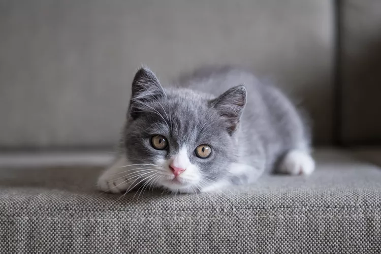
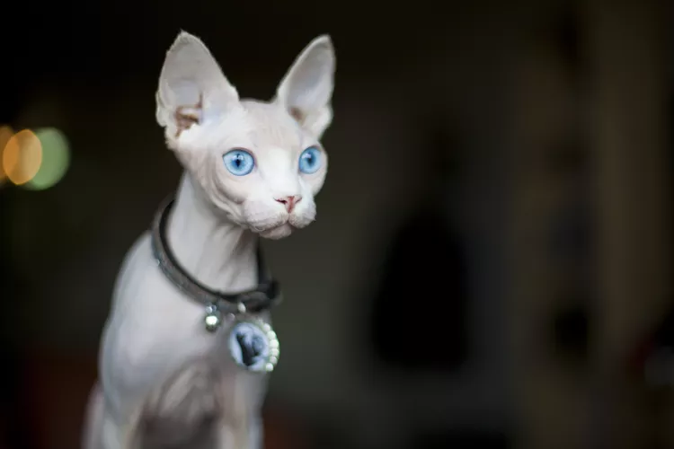
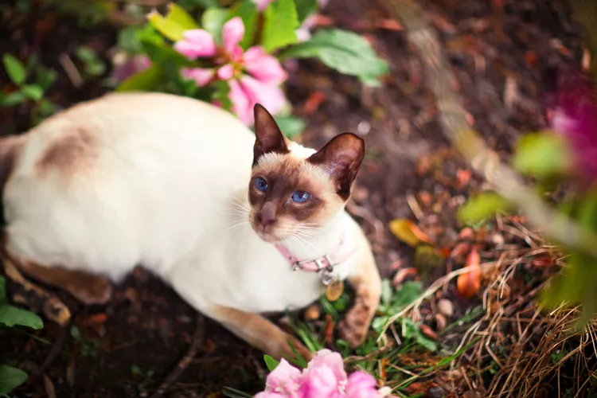

Cat Breeds
Sources are hyperlinked to the pictures
Image |
Name |
Description |
||
|  | British Shorthair |
The British Shorthair is a cat with fluffy fur and a variety of eye color.
It is a naturally affectionate pet compared to other cat breeds. |
||
|  | Sphynx Cat |
Known as the hairless cat named after the sphinx for their nature and looks.
They make good pets and are very playful. |
||
|  | Siamese Cat |
Are also called "meezers".
They are known to be sociable and good pets. |
||